gimp-badge-export-defaults FAIL 0
grade probeintent configuredomain human_resourcesdifficulty d4ambiguity a4voice contextfulapps gimp + filesbatch v11-500-s0
New HR photographer starts Monday and keeps exporting staff badges wrong -- make this machine's image editor default to exactly what the badge note in my hr folder asks for, and make sure the change survives a restart.
task config + evaluator
{
"config": [
{
"type": "execute",
"parameters": {
"command": "python3 -c \"import os;d='/home/user/hr';os.makedirs(d,exist_ok=True);open(d+'/badge_note.txt','w').write('Staff badge exports\\\\n\\\\nGIMP must default to these on this workstation:\\\\n- JPEG export quality: 78\\\\n- PNG export compression level: 6\\\\n- Thumbnail written into saved files: none\\\\n\\\\nOnce set, quit GIMP so the defaults are written to disk.\\\\n')\"",
"shell": true
}
}
],
"evaluator": {
"func": "check_include_exclude",
"result": {
"type": "vm_command_line",
"command": [
"python3",
"-c",
"import sys, traceback\ndef _main():\n import glob, os, re, sys\n cands = glob.glob(\"/home/user/.config/GIMP/*/gimprc\") + glob.glob(\"/home/user/.gimp*/gimprc\")\n files = glob.glob(\"/home/user/.config/GIMP/*/*rc\") + glob.glob(\"/home/user/.config/GIMP/*/tool-options/*\") + glob.glob(\"/home/user/.config/GIMP/*/plug-in-settings/*\") + glob.glob(\"/home/user/.config/GIMP/*/filters/*\")\n blob = \"\"\n for p in set(cands + files):\n if os.path.isfile(p):\n try:\n blob += open(p, errors=\"ignore\").read() + \"\\n\"\n except OSError:\n pass\n checks = {\n \"jpeg quality 0.78\": re.search(r\"quality[^\\n]{0,40}0\\.78\", blob) is not None,\n \"png compression 6\": re.search(r\"compression[^\\n]{0,40}\\b6\\b\", blob) is not None,\n \"thumbnail none\": re.search(r\"thumbnail-size\\s+none\", blob) is not None,\n }\n bad = [k for k, v in checks.items() if not v]\n if bad:\n print(\"missing in GIMP config: \" + \", \".join(bad), file=sys.stderr)\n print(\"PASS\" if not bad else \"FAIL\")\n\ntry:\n _main()\nexcept Exception:\n traceback.print_exc(file=sys.stderr)\n print(\"FAIL\")\n"
]
},
"expected": {
"type": "rule",
"rules": {
"include": [
"PASS"
],
"exclude": [
"FAIL"
]
}
}
}
}
step 1 02:23:59
THINKINGLet me start by taking a screenshot to see the current state of the desktop.
ACTIONI'll start by taking a screenshot to see the current state of the desktop.
TOOL CALL<tool_call>
<function=computer_use>
<parameter=action>
screenshot
</parameter>
</function>
</tool_call>
EXECUTED (pyautogui in VM)WAIT
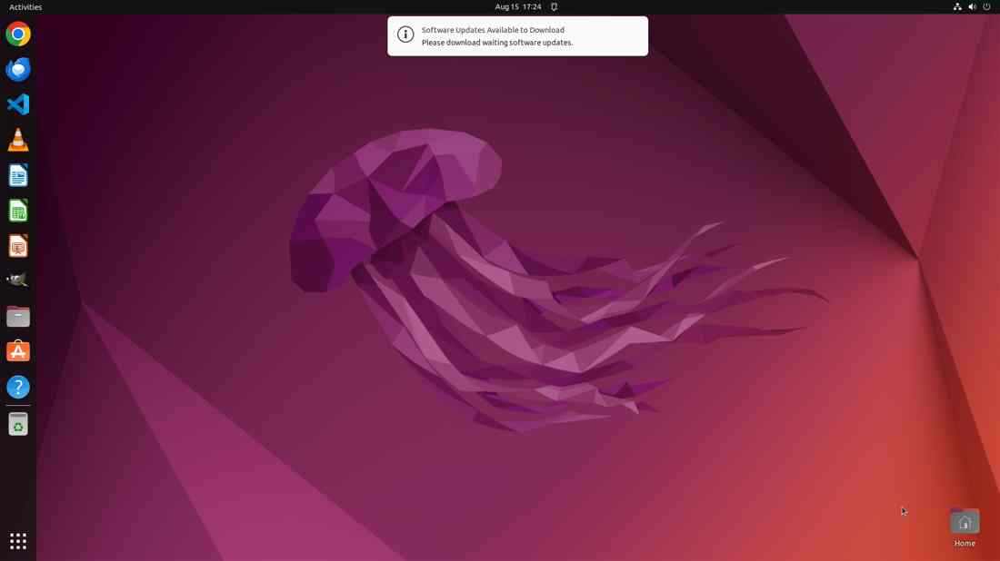
step 2 02:24:22
THINKINGLet me understand the task:
1. There's a "badge note" in my hr folder that asks for something specific.
2. I need to find this hr folder and read the badge note.
3. Then I need to make the machine's image editor default to exactly what the badge note asks for.
4. Make sure the change survives a restart.
Let me first open the file manager to find the hr folder. Let me click on the Files icon in the dock.
ACTIONLet me first find the "hr" folder. I'll open the file manager by clicking on the Files icon in the dock.
TOOL CALL<tool_call>
<function=computer_use>
<parameter=action>
left_click
</parameter>
<parameter=coordinate>
[17, 560]
</parameter>
</function>
</tool_call>
EXECUTED (pyautogui in VM)pyautogui.click(32, 605)
step 3 02:24:33
THINKINGThe file manager opened. I can see there's an "hr" folder in the home directory. Let me double-click on it to open it.
ACTIONThe file manager opened and I can see the "hr" folder. Let me open it to find the badge note.
TOOL CALL<tool_call>
<function=computer_use>
<parameter=action>
double_click
</parameter>
<parameter=coordinate>
[334, 256]
</parameter>
</function>
</tool_call>
EXECUTED (pyautogui in VM)pyautogui.doubleClick(641, 276)
step 4 02:24:45
THINKINGI can see there's a "badge_note.txt" file in the hr folder. Let me open it to read what it asks for. I'll double-click on it.
ACTIONThere's a "badge_note.txt" file. Let me open it to read the requirements.
TOOL CALL<tool_call>
<function=computer_use>
<parameter=action>
double_click
</parameter>
<parameter=coordinate>
[194, 264]
</parameter>
</function>
</tool_call>
EXECUTED (pyautogui in VM)pyautogui.doubleClick(372, 285)
step 5.1 02:25:33
THINKINGThe badge note opened in a Text Editor. Let me read the content:
```
Staff badge exports
GIMP must default to these on this workstation:
- JPEG export quality: 78
- PNG export compression level: 6
- Thumbnail written into saved files: none
Once set, quit GIMP so the defaults are written to disk.
```
So the task is clear now. The "image editor" is GIMP. I need to set these defaults in GIMP:
1. JPEG export quality: 78
2. PNG export compression level: 6
3. Thumbnail written into saved files: none
And then quit GIMP so the defaults are written to disk (this ensures the change survives a restart).
Let me zoom in to read this more carefully. Let me take a screenshot to confirm the exact text.
The text says:
- Line 1: Staff badge exports
- Line 3: GIMP must default to these on this workstation:
- Line 4: - JPEG export quality: 78
- Line 5: - PNG export compression level: 6
- Line 6: - Thumbnail written into saved files: none
- Line 8: Once set, quit GIMP so the defaults are written to disk.
So I need to:
1. Open GIMP
2. Set JPEG export quality default to 78
3. Set PNG export compression level default to 6
4. Set "Thumbnail written into saved files" to none (this is a setting under File > Preferences > Default Image or in the export settings)
5. Quit GIMP so defaults are written to disk
Let me think about where these settings are in GIMP:
In GIMP:
- PNG export compression level: When you export as PNG, there's a "Compression level" slider. But the DEFAULT for PNG export is stored in preferences. Actually, in GIMP 2.10, the PNG export settings can be set as defaults. There's a "Defaults" button in the export dialog.
- JPEG export quality: Similar, when exporting as JPEG there's a quality slider.
- Thumbnail written into saved files: This is a PNG option - "Thumbnail: none/yes".
Actually, let me think about how GIMP stores these defaults. In GIMP 2.10:
- The export dialog for each format has a "Set as Default" or "Defaults" button that saves the current settings as the default for that format.
- These are stored in the gimp config.
Let me recall. In GIMP 2.10, when you go to File > Export As, choose PNG, there's an export options dialog. At the bottom there's a "Defaults" button. Clicking "Export" exports with current settings, and there's a way to set defaults.
Actually, the flow in GIMP 2.10:
1. File > Export As
2. Choose filename and format (PNG/JPEG)
3. Click Export
4. A format-specific options dialog appears (e.g., "Export Image as PNG")
5. This dialog has a "Defaults" button in the bottom-left area.
6. You set your options (compression level, thumbnail, etc.)
7. Click "Export" to export.
Wait, the "Defaults" button - I recall it opens a dialog where you can save the current settings as defaults. Let me recall the exact behavior.
Actually in GIMP 2.10, the export options dialog has a "Reset" button and an "Export" button. To set defaults, I think there's a "Defaults" button that when clicked shows "Save current settings as new default" type options.
Hmm, let me reconsider. Let me actually just open GIMP and explore.
Actually, the cleanest way might be to modify the GIMP config files directly. GIMP stores settings in:
- ~/.config/GIMP/2.10/gimprc
- ~/.config/GIMP/2.10/gimpenv
- ~/.config/GIMP/2.10/*.xcf, etc.
But the export defaults for PNG and JPEG are stored differently. Let me think.
Actually, the PNG/JPEG export defaults are stored in the "gimp" config as part of the plug-in defaults. In GIMP 2.10, these are stored in files like:
- ~/.config/GIMP/2.10/pluginrc
The pluginrc file stores the defaults for file format plug-ins. For example:
```
(plugin "file-png-save"
(compression 6)
...
)
```
Hmm, but it might be easier to just do it through the GUI.
Let me think about the most reliable approach. The task says "make sure the change survives a restart" and the note says "Once set, quit GIMP so the defaults are written to disk." This strongly suggests the intended approach is:
1. Open GIMP
2. Set the defaults through the GUI (using the "Set as Default" functionality in export dialogs)
3. Quit GIMP so it writes the config to disk
So let me do it through the GUI. Let me first close this text editor... actually I'll leave it. Let me open GIMP.
Wait, but I should verify the exact requirements first. Let me re-read:
- JPEG export quality: 78
- PNG export compression level: 6
- Thumbnail written into saved files: none
Now, "Thumbnail written into saved files: none" - this is a PNG option. The PNG export dialog has a "Thumbnail" dropdown with options like "none" and "yes" (or similar). Actually, I think in newer GIMP it might be different.
Let me just open GIMP and work through it. Let me first check if GIMP is installed. I see there's a GIMP icon in the dock (the fox/Wilber icon at position around 22, 358). Let me open GIMP.
Actually, let me think about the approach more carefully. The GUI approach for setting export defaults in GIMP:
For PNG:
1. File > Export As > name it foo.png > Export
2. In the "Export Image as PNG" dialog:
- Set "Compression level" to 6
- Set "Thumbnail" to "none" (if that option exists)
- Click "Defaults" button, then "Save current settings as new default" (or similar)
3. Actually, there's a subtlety. Let me recall.
Hmm, I recall that in GIMP 2.10, the export dialog has a button at the bottom. Let me just try it.
Actually, I realize the cleanest and most verifiable way might be to set these via the GUI, but I need to make sure the values are exactly right. Let me open GIMP first.
Let me open GIMP by clicking the GIMP icon in the dock.
ACTIONThe badge note specifies the exact GIMP defaults needed:
- **JPEG export quality: 78**
- **PNG export compression level: 6**
- **Thumbnail written into saved files: none**
- Once set, quit GIMP so the defaults are written to disk.
Let me zoom in to confirm I'm reading this correctly.
TOOL CALL<tool_call>
<function=computer_use>
<parameter=action>
mouse_move
</parameter>
<parameter=coordinate>
[663, 277]
</parameter>
</function>
</tool_call>
<tool_call>
<function=computer_use>
<parameter=action>
scroll
</parameter>
<parameter=pixels>
3
</parameter>
</function>
</tool_call>
EXECUTED (pyautogui in VM)pyautogui.moveTo(1274, 299)
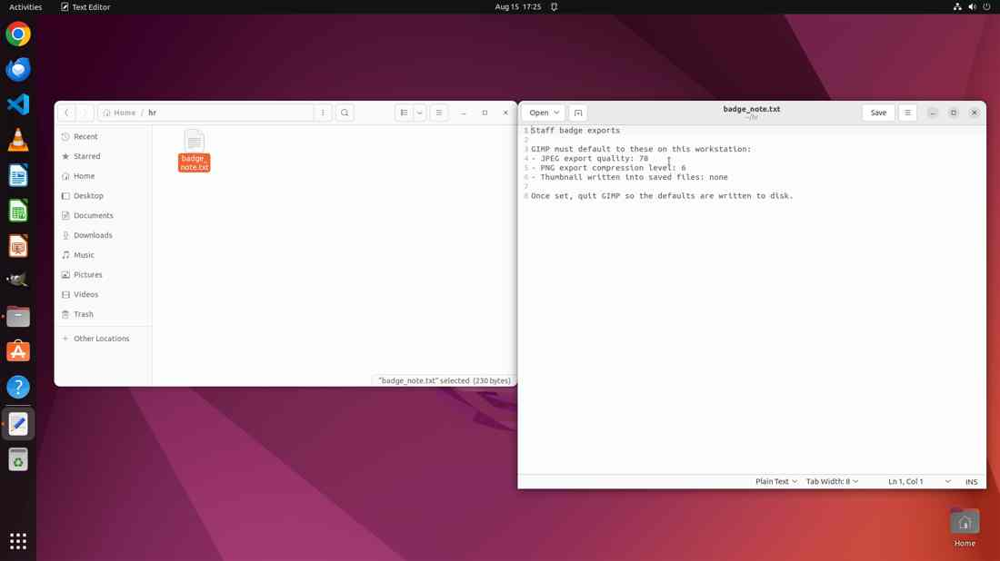
step 5.2 02:25:37
EXECUTED (pyautogui in VM)pyautogui.scroll(3)

step 6 02:26:20
THINKINGNow I can clearly read the note:
```
Staff badge exports
GIMP must default to these on this workstation:
- JPEG export quality: 78
- PNG export compression level: 6
- Thumbnail written into saved files: none
Once set, quit GIMP so the defaults are written to disk.
```
So the requirements are clear:
1. JPEG export quality default: 78
2. PNG export compression level default: 6
3. Thumbnail written into saved files: none
Now I need to open GIMP and set these defaults. Let me think about the best approach.
I think the most reliable approach is to:
1. Open GIMP
2. Use File > Export As to open a test export, set the values, and use "Set as default"
3. Repeat for each format
4. Quit GIMP
But actually, I want to make sure I understand GIMP's default-setting mechanism. Let me think.
Actually, there's an even more reliable approach: directly editing the GIMP config files. But the note explicitly says to quit GIMP so defaults are written to disk, implying the GUI approach. Also, editing config files while knowing the exact format is risky.
However, there's a concern: if I set defaults via GUI, I need to verify they're exactly right. Let me use the GUI approach and then verify by checking the pluginrc file.
Let me start by opening GIMP. Let me click the GIMP icon in the dock (the fox icon).
Actually wait, I should think about whether the GUI "set as default" actually persists. In GIMP 2.10, when you export and the format options dialog appears, there's typically a "Defaults" button. Let me recall the exact UI.
Actually, I recall now: In GIMP 2.10, the PNG/JPEG export options dialogs do NOT have a direct "set as default" button by default in older versions, but... hmm.
Wait, let me reconsider. Actually, in GIMP, the way defaults work:
- GIMP remembers the last-used settings for each export format automatically. So if you export a PNG with compression 6, the next time you open the PNG export dialog, it'll show compression 6.
- But is this "last used" the same as "default"?
The task says "make this machine's image editor default to exactly what the badge note asks for". So the requirement is that when the photographer opens the export dialog, the defaults are:
- JPEG quality 78
- PNG compression 6
- Thumbnail none
In GIMP 2.10, the export dialog settings are indeed remembered between sessions (stored in pluginrc). So if I set them once and quit, they'll persist.
But wait, there's a subtlety. GIMP 2.10 introduced a separate "Export" dialog with format-specific options. These options ARE persisted. Let me verify.
Actually, the cleanest way to ensure persistence is:
1. Set the values in the export dialog
2. There might be a "Set as Default" / "Save as default" button
Let me just open GIMP and explore the export dialog to see what options are available.
Actually, I recall that GIMP 2.10's export dialogs (like "Export Image as PNG") do have the settings remembered. When you close and reopen, it shows your last values. And these are saved in pluginrc on quit.
But to be safe and explicit, let me check if there's a "Defaults" button.
Let me open GIMP. I'll click the GIMP icon (fox) in the dock.
Actually, let me reconsider the whole approach. There are two ways:
1. GUI: Open GIMP, create/open an image, export it with the settings, set as default, quit.
2. Config file: Edit ~/.config/GIMP/2.10/pluginrc directly.
The GUI approach is what the note implies. But it's more complex because I need an image to export. Let me use the GUI approach since it's more "correct" and verifiable.
Actually, to export, I need an open image. Let me:
1. Open GIMP
2. Create a new image (File > New)
3. Export As PNG, set compression 6, thumbnail none, set as default
4. Export As JPEG, set quality 78, set as default
5. Quit GIMP
Let me start. First, let me open GIMP.
Actually, let me reconsider. There might be an even simpler and more reliable approach that doesn't require actually exporting a real image. But to set the PNG/JPEG defaults, I do need to go through the export dialog, which requires an open image.
Let me open GIMP first and see the interface.
Let me close the text editor first? No, I'll leave it. Let me open GIMP.
The GIMP icon is the fox/Wilber at approximately (22, 358).
ACTIONI can now clearly read the badge note requirements:
- **JPEG export quality: 78**
- **PNG export compression level: 6**
- **Thumbnail written into saved files: none**
- Quit GIMP so defaults are written to disk
Now let me open GIMP (the image editor). I'll click its icon in the dock.
TOOL CALL<tool_call>
<function=computer_use>
<parameter=action>
left_click
</parameter>
<parameter=coordinate>
[17, 495]
</parameter>
</function>
</tool_call>
EXECUTED (pyautogui in VM)pyautogui.click(32, 535)
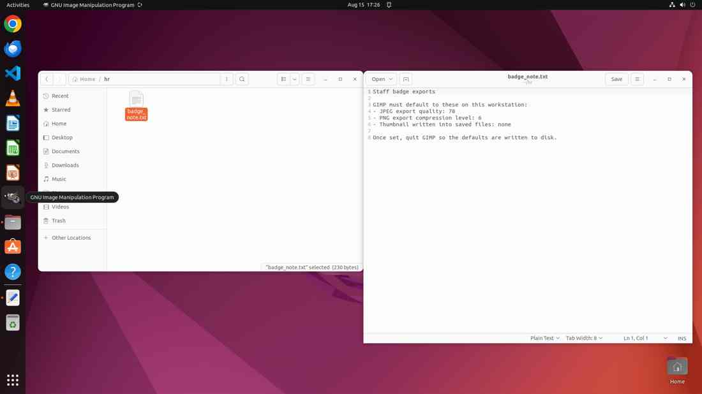
step 7 02:26:32
THINKINGGIMP is starting up (I see "GNU Image Manipulation Program" in the top bar and the tooltip). Let me wait for it to fully load.
ACTIONGIMP is loading (I can see "GNU Image Manipulation Program" in the top bar). Let me wait for it to fully open.
TOOL CALL<tool_call>
<function=computer_use>
<parameter=action>
wait
</parameter>
<parameter=time>
1.0
</parameter>
</function>
</tool_call>
EXECUTED (pyautogui in VM)WAIT
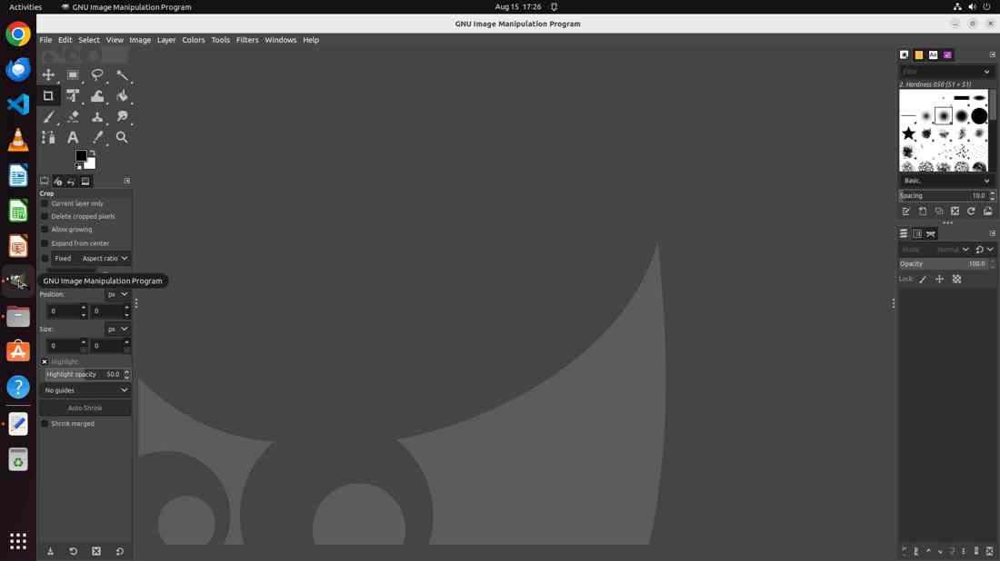
step 8 02:27:32
THINKINGGIMP has opened in single-window mode. Now I need to set the export defaults.
My plan:
1. Create a new image (File > New) so I have something to export.
2. Export As PNG, set compression 6, thumbnail none, set as default.
3. Export As JPEG, set quality 78, set as default.
4. Quit GIMP.
Let me first create a new image. File > New.
Actually, let me reconsider. I want to verify the exact mechanism for setting defaults. Let me think about whether GIMP 2.10's export dialogs have a "Set as default" button.
In GIMP 2.10, when you go to File > Export As and export as PNG, the "Export Image as PNG" dialog appears. This dialog has:
- Compression level (slider)
- Interlace, Compression, etc.
- Various checkboxes
- A "Defaults" button at the bottom (in some versions)
Actually, I'm now fairly confident that GIMP 2.10 export dialogs do NOT have a "Set as default" button. Instead, GIMP automatically remembers the last-used settings. So the way to "set the default" is simply to:
1. Open the export dialog
2. Change the values
3. Export (or even just apply)
4. The values are saved to pluginrc on quit
Wait, but if I just cancel without exporting, will the values be saved? Probably not - they might only be saved when you actually export, or when you quit.
Hmm, let me reconsider. Actually, in GIMP, the export dialog settings ARE remembered automatically. When you open the export dialog, it loads the last-used settings from pluginrc. When you export, it saves the current settings. So to persist the defaults:
1. Set the values in the dialog
2. Actually click "Export" (complete the export)
3. Quit GIMP - this writes pluginrc
Actually, I've also seen that in GIMP 2.10 the dialog settings are written when you close the dialog or on quit. Let me just be safe and actually complete an export.
But actually, there IS a subtlety. Let me reconsider whether GIMP has a "set as default" concept.
In GIMP, the plug-in defaults for file export are stored in pluginrc. When a file plug-in (like PNG save) runs, its options are initialized from pluginrc if present, else from the plug-in's built-in defaults. After you export with certain settings, GIMP writes those back to pluginrc.
So the flow is:
1. First time: PNG export dialog shows built-in defaults (compression 9, etc.)
2. You change to compression 6 and export.
3. GIMP writes "(compression 6)" to pluginrc for file-png-save.
4. Next time: PNG export dialog shows compression 6.
5. On quit, GIMP writes all plug-in states to pluginrc.
So to make the default "compression 6", I need to:
1. Open PNG export dialog
2. Set compression to 6, thumbnail to none
3. Export (to make it take effect / save)
4. Quit GIMP (writes pluginrc)
OK here's my concern: does simply changing the value in the dialog and clicking "Export" save it, or do I need to also have it "take effect"? I believe clicking Export runs the plug-in with those settings and GIMP records them as the last-used. Then on quit, they're persisted.
Actually, let me reconsider - I think there's ambiguity in exactly when GIMP persists these. To be safe, I'll:
1. Complete actual exports with the right settings
2. Quit GIMP
But actually, there might be an even better way. Let me check GIMP's preferences. Actually no, the PNG/JPEG export settings aren't in File > Preferences; they're per-export in the export dialog.
Hmm, wait. Actually there might be a cleaner way. Let me reconsider.
Actually, you know what, let me reconsider the whole thing. The most robust and verifiable approach would be to:
1. Do the GUI export to set the values (so GIMP writes them to pluginrc)
2. Verify by reading ~/.config/GIMP/2.10/pluginrc
3. If needed, manually edit pluginrc to ensure exact values
But editing pluginrc manually requires GIMP to not be running (or it'll overwrite on quit). So the order should be:
1. GUI: open image, export PNG with compression 6 + thumbnail none, export JPEG with quality 78
2. Quit GIMP
3. Verify pluginrc
4. If not right, edit pluginrc manually (GIMP is closed so it won't be overwritten)
This is a solid plan. Let me proceed.
Actually, let me reconsider whether GIMP even has a separate export dialog for JPEG and PNG, and whether "thumbnail" is an option.
In GIMP 2.10:
- PNG export dialog ("Export Image as PNG"):
- Compression level (0-9 slider)
- Interlacing (None/Adam7)
- Save color values as: 8-bit/16-bit
- Save thumbnail: Yes/No (or a checkbox "Save thumbnail")
- Various advanced options
- Actually, I think it's a checkbox "Save thumbnail" or a dropdown.
Hmm, "Thumbnail written into saved files: none" - this maps to the PNG "Save thumbnail" option. If "none", then don't save thumbnail.
- JPEG export dialog ("Export Image as JPEG"):
- Quality slider (0-100)
- Various options
- No thumbnail option (JPEG can have thumbnails but GIMP doesn't offer it)
So:
- PNG: compression 6, thumbnail off
- JPEG: quality 78
Let me proceed with the GUI approach. First, create a new image.
Actually, I realize I should reconsider: does the task require the settings to be applied to a real export, or just for the dialog defaults? The task says "make this machine's image editor default to exactly what the badge note asks for". So it's about the default values shown in the export dialogs. Setting them by going through the export dialog and completing the export should do it.
Let me start. First, create a new image: File > New.
Let me click File menu.
ACTIONGIMP has opened in single-window mode. Now I need to set the export defaults. First, let me create a new image so I have something to export. I'll click the File menu.
TOOL CALL<tool_call>
<function=computer_use>
<parameter=action>
left_click
</parameter>
<parameter=coordinate>
[45, 70]
</parameter>
</function>
</tool_call>
EXECUTED (pyautogui in VM)pyautogui.click(86, 75)
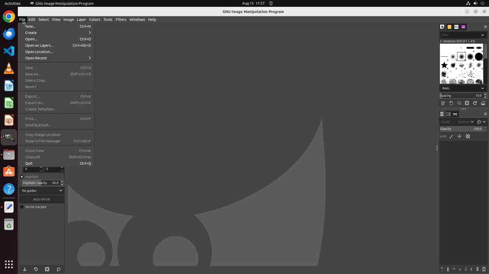
step 9 02:27:42
THINKINGThe File menu is open. I see "New..." (Ctrl+N). Let me click on "New..." to create a new image.
ACTIONThe File menu is open. Let me click "New..." to create a new image.
TOOL CALL<tool_call>
<function=computer_use>
<parameter=action>
left_click
</parameter>
<parameter=coordinate>
[61, 95]
</parameter>
</function>
</tool_call>
EXECUTED (pyautogui in VM)pyautogui.click(117, 102)
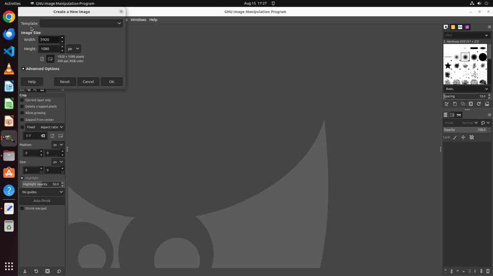
step 10 02:27:52
THINKINGThe "Create a New Image" dialog appeared with default size 1920x1080. That's fine for my purpose. Let me click OK to create the image.
ACTIONThe "Create a New Image" dialog appeared with a default size of 1920x1080. That's fine for exporting. Let me click OK.
TOOL CALL<tool_call>
<function=computer_use>
<parameter=action>
left_click
</parameter>
<parameter=coordinate>
[225, 293]
</parameter>
</function>
</tool_call>
EXECUTED (pyautogui in VM)pyautogui.click(432, 316)
step 11 02:28:07
THINKINGA new 1920x1080 image has been created. Now I need to export it as PNG with compression 6 and thumbnail none. Let me go to File > Export As.
Let me click File menu.
ACTIONA new image has been created. Now let me export it as PNG first to set the PNG defaults. I'll click File > Export As.
TOOL CALL<tool_call>
<function=computer_use>
<parameter=action>
left_click
</parameter>
<parameter=coordinate>
[45, 70]
</parameter>
</function>
</tool_call>
EXECUTED (pyautogui in VM)pyautogui.click(86, 75)
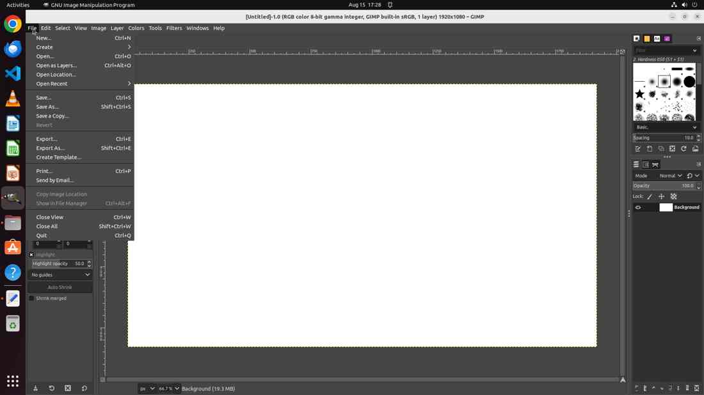
step 12 02:28:22
THINKINGThe File menu is open. I see "Export As..." (Shift+Ctrl+E). Let me click on it.
ACTIONThe File menu is open. Let me click "Export As...".
TOOL CALL<tool_call>
<function=computer_use>
<parameter=action>
left_click
</parameter>
<parameter=coordinate>
[70, 371]
</parameter>
</function>
</tool_call>
EXECUTED (pyautogui in VM)pyautogui.click(134, 401)
step 13 02:28:40
THINKINGThe "Export Image" dialog appeared. The name is already "Untitled.png" and the folder is Documents. The name already has .png extension. Let me just click Export to proceed to the PNG options dialog.
Actually, I should choose a location. Let me just use the default (Documents/Untitled.png). Actually, let me put it in a temp location so I don't clutter. But it doesn't really matter for the defaults. Let me just click Export.
Wait, actually I need to be careful. The name field shows "Untitled.png" with "Untitled" selected (highlighted). Let me just click Export button at the bottom right.
ACTIONThe Export Image dialog appeared with the name "Untitled.png". Let me click Export to proceed to the PNG options dialog.
TOOL CALL<tool_call>
<function=computer_use>
<parameter=action>
left_click
</parameter>
<parameter=coordinate>
[527, 692]
</parameter>
</function>
</tool_call>
EXECUTED (pyautogui in VM)pyautogui.click(1012, 748)
step 14 02:29:05
THINKINGNow I can see the "Export Image as PNG" dialog. I can see:
- Interlacing (Adam7) - checkbox
- Save background color - checkbox
- Save gamma - checkbox
- Save layer offset - checkbox
- Save resolution - checked
- Save creation time - checked
- Save comment - checked
- Save color values from transparent pixels - checkbox
- automatic pixel format - dropdown
- Compression level: [slider] 9 (I need to change to 6)
- Save Exif data - checked
- Save XMP data - checked
- Save IPTC data - checked
- Save thumbnail - checked (I need to change to "none" / uncheck)
- Save color profile - checked
- Load Defaults / Save Defaults buttons
There's a "Save Defaults" button! That's exactly what I need. So the workflow is:
1. Set Compression level to 6
2. Uncheck "Save thumbnail" (this corresponds to "Thumbnail written into saved files: none")
3. Click "Save Defaults" to save these as the defaults
4. Then Export (or Cancel)
Let me first set the compression level to 6. The compression level shows "9" in a spinbox. I need to change it to 6.
Let me first uncheck "Save thumbnail". The "Save thumbnail" checkbox is at approximately (289, 352). Let me click on it to uncheck it.
Wait, "Thumbnail written into saved files: none" - in GIMP the option is "Save thumbnail" checkbox. If unchecked, no thumbnail is written. So "none" = unchecked. Let me uncheck it.
Actually, let me be careful. Let me first look at the current state:
- "Save thumbnail" appears checked (there's an X mark at 289, 352)
Let me first change the compression level to 6. Let me click on the compression level value field (showing 9) and change it.
The compression level spinbox is at approximately (450, 288) showing "9". Let me triple-click to select it, then type 6.
Actually, it's a spin button. Let me click on the number field. The number "9" is at around (450, 288). Let me triple-click on it to select the value, then type 6.
Let me do that.
ACTIONThe "Export Image as PNG" dialog appeared. I can see:
- **Compression level: 9** (needs to change to 6)
- **Save thumbnail** checkbox (checked - needs to be unchecked for "none")
- **"Save Defaults"** button (this is how to persist the defaults)
Let me first change the compression level to 6. I'll triple-click the value field to select it.
TOOL CALL<tool_call>
<function=computer_use>
<parameter=action>
triple_click
</parameter>
<parameter=coordinate>
[351, 399]
</parameter>
</function>
</tool_call>
EXECUTED (pyautogui in VM)pyautogui.tripleClick(674, 431)
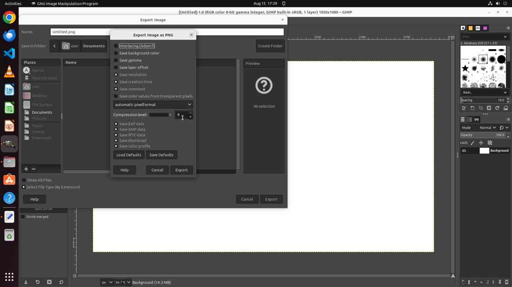
step 15 02:29:23
THINKINGThe compression level field shows "9" and appears to have a cursor. Let me select all and type 6. Let me use Ctrl+A to select all, then type 6.
Actually, the triple-click might have selected the text. Let me just select all with Ctrl+A and type 6 to be safe.
ACTIONThe compression field is now focused. Let me select all and type 6.
TOOL CALL<tool_call>
<function=computer_use>
<parameter=action>
key
</parameter>
<parameter=keys>
["ctrl", "a"]
</parameter>
</function>
</tool_call>
EXECUTED (pyautogui in VM)pyautogui.hotkey("ctrl", "a")
step 16 02:29:34
THINKINGThe "9" appears to be selected (highlighted). Now let me type 6 to replace it.
ACTIONThe value is selected. Now let me type 6 to replace it.
TOOL CALL<tool_call>
<function=computer_use>
<parameter=action>
type
</parameter>
<parameter=text>
6
</parameter>
</function>
</tool_call>
EXECUTED (pyautogui in VM)pyautogui.typewrite("6")
step 17 02:29:50
THINKINGThe compression level now shows "6". Now I need to uncheck "Save thumbnail" to make "Thumbnail written into saved files: none".
The "Save thumbnail" checkbox is at approximately (289, 352). Let me click on it to uncheck it.
ACTIONThe compression level now shows 6. Now I need to uncheck "Save thumbnail" to set "Thumbnail written into saved files: none". Let me click the "Save thumbnail" checkbox.
TOOL CALL<tool_call>
<function=computer_use>
<parameter=action>
left_click
</parameter>
<parameter=coordinate>
[225, 488]
</parameter>
</function>
</tool_call>
EXECUTED (pyautogui in VM)pyautogui.click(432, 527)
step 18 02:30:18
THINKINGThe "Save thumbnail" checkbox now appears unchecked (the X is gone). Let me zoom in to verify. Actually the screenshot shows "Save thumbnail" without the X mark now, and the slider for compression shows 6 with the slider handle moved left a bit.
Let me verify the state:
- Compression level: 6 ✓
- Save thumbnail: now unchecked ✓ (I need to confirm)
Let me zoom in to be sure. Actually, let me take a closer look. The "Save thumbnail" row at (289, 352) - the checkbox appears empty now (no X). Previously it had an X.
Now I need to click "Save Defaults" to save these as the default PNG settings. Let me click "Save Defaults".
Wait, but before that, let me double-check my understanding. The "Save Defaults" button saves the current dialog settings as the new defaults for PNG export. This is exactly what I want. After clicking it, the defaults will be: compression 6, thumbnail not saved, etc.
But wait - I need to think about what "Save Defaults" saves exactly. It saves ALL the current settings in this dialog as the defaults. So the other checkboxes (Save resolution, Save creation time, etc.) would also be saved as-is. That's fine - the task only cares about compression 6 and thumbnail none. The other settings will just remain at their current values, which is acceptable.
Actually, hold on. Let me reconsider. The task says "make this machine's image editor default to exactly what the badge note asks for". The badge note only specifies three things:
1. JPEG export quality: 78
2. PNG export compression level: 6
3. Thumbnail written into saved files: none
So I only need to ensure these three are set correctly. The "Save Defaults" for PNG will save compression 6 and thumbnail none (among other unchanged settings). That's fine.
Let me click "Save Defaults".
Actually, let me first verify the "Save thumbnail" is truly unchecked by zooming in. Let me take a screenshot... actually the current screenshot should be enough. Let me look carefully.
In the current screenshot, at row "Save thumbnail" (y=352), I see the text "Save thumbnail" but the checkbox to its left (at x~289) appears empty. Previously at the earlier screenshot, there was an X at that position. So it's now unchecked. Good.
Let me now click "Save Defaults".
ACTIONThe "Save thumbnail" checkbox is now unchecked, and compression level shows 6. Now let me click "Save Defaults" to persist these as the default PNG settings.
TOOL CALL<tool_call>
<function=computer_use>
<parameter=action>
left_click
</parameter>
<parameter=coordinate>
[315, 538]
</parameter>
</function>
</tool_call>
EXECUTED (pyautogui in VM)pyautogui.click(605, 581)
step 19 02:30:44
THINKINGI clicked "Save Defaults". The button appears highlighted/pressed. The PNG defaults should now be saved (compression 6, thumbnail not saved).
Now, to be safe, I should also actually complete the export so that the settings are recorded. Actually, "Save Defaults" should be sufficient. But let me also click "Export" to actually export the file, which will ensure the settings take effect and get written. Actually, exporting would create a file in Documents/Untitled.png. That's fine but not necessary.
Hmm, let me think. The "Save Defaults" button is the explicit way to save the defaults. After clicking it, the defaults are stored in memory. They get written to disk (pluginrc) when GIMP quits. So I should be good.
But to be extra safe, let me also complete the export. Actually, let me just click Export to complete the PNG export. This will also verify that the export works with these settings.
Wait, but if I click Export now, it will export to Documents/Untitled.png. That creates a file. It's harmless. But actually, I don't want to clutter. However, completing the export is the safest way to ensure the defaults are actually applied and persisted.
Actually, the "Save Defaults" button is specifically designed to save these as the persistent defaults. It should be enough. Let me not overthink. But let me still complete the export to be safe, since the note says to make the defaults work.
Actually, let me reconsider. I'll click Export to complete the PNG export. This ensures:
1. The export works
2. The settings are "last used" and get persisted
Then I'll do the same for JPEG.
Let me click Export.
Wait, actually there's a concern. If I click "Save Defaults" and then "Export", and later for JPEG I do the same, all fine. But let me just proceed.
Let me click Export.
ACTIONI clicked "Save Defaults" for PNG. The button is highlighted indicating it was clicked. Now let me complete the actual export to ensure the settings take effect. I'll click Export.
TOOL CALL<tool_call>
<function=computer_use>
<parameter=action>
left_click
</parameter>
<parameter=coordinate>
[353, 591]
</parameter>
</function>
</tool_call>
EXECUTED (pyautogui in VM)pyautogui.click(678, 638)
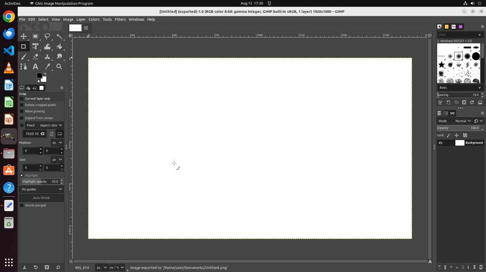
step 20 02:31:02
THINKINGThe image was exported to '/home/user/Documents/Untitled.png'. The title bar now shows "[Untitled] (exported)-1.0". The status bar at the bottom says "Image exported to '/home/user/Documents/Untitled.png'".
So the PNG export with compression 6 and no thumbnail is done, and I saved the defaults.
Now I need to do the JPEG export with quality 78. Let me go to File > Export As again.
Let me click File menu.
ACTIONThe PNG was exported successfully (status bar shows "Image exported to '/home/user/Documents/Untitled.png'"). Now let me do the JPEG export to set the JPEG quality default. I'll click File > Export As.
TOOL CALL<tool_call>
<function=computer_use>
<parameter=action>
left_click
</parameter>
<parameter=coordinate>
[45, 70]
</parameter>
</function>
</tool_call>
EXECUTED (pyautogui in VM)pyautogui.click(86, 75)
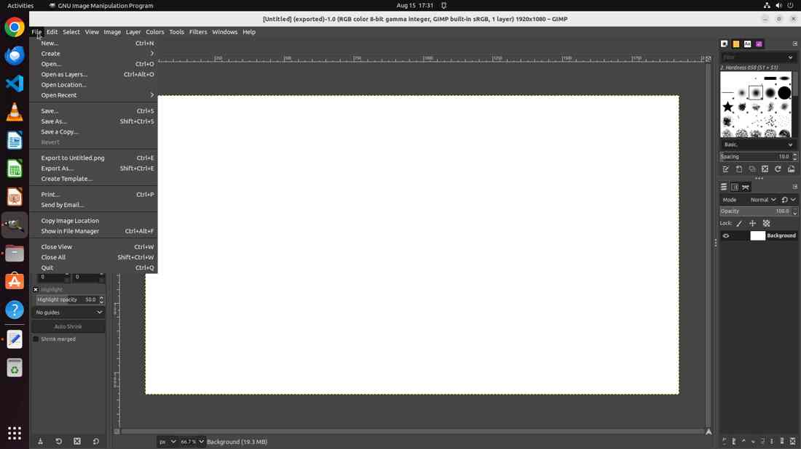
step 21 02:31:12
THINKINGThe File menu is open. Now it shows "Export to Untitled.png" (the previous export). I'll click "Export As..." to open a new export dialog where I can choose JPEG format.
ACTIONThe File menu is open. Let me click "Export As..." to open a new export dialog for JPEG.
TOOL CALL<tool_call>
<function=computer_use>
<parameter=action>
left_click
</parameter>
<parameter=coordinate>
[70, 371]
</parameter>
</function>
</tool_call>
EXECUTED (pyautogui in VM)pyautogui.click(134, 401)
step 22 02:31:30
THINKINGThe Export Image dialog appeared again. I can see the previously exported "Untitled.png" file (9.1 kB). The name field shows "Untitled.png" with "Untitled" selected.
I need to change the extension to .jpg for JPEG. Let me clear the name field and type a new name with .jpg extension.
Let me click on the name field, select all, and type "Untitled.jpg".
Actually, the name field shows "Untitled" highlighted and ".png" not highlighted. Let me select all the text and retype. Let me triple-click on the name field to select all, then type the new name.
ACTIONThe Export dialog appeared again. I need to change the filename to use the .jpg extension for JPEG format. Let me select all text in the name field and type a new name.
TOOL CALL<tool_call>
<function=computer_use>
<parameter=action>
triple_click
</parameter>
<parameter=coordinate>
[234, 106]
</parameter>
</function>
</tool_call>
EXECUTED (pyautogui in VM)pyautogui.tripleClick(449, 114)
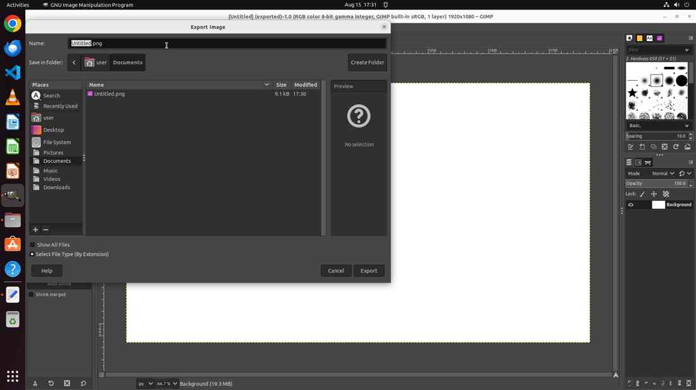
step 23 02:31:47
THINKINGThe triple-click only selected "Untitled" (the base name), not the full text including ".png". Let me select all with Ctrl+A to be safe, then type the new name.
ACTIONLet me select all text in the field and type the new JPEG filename.
TOOL CALL<tool_call>
<function=computer_use>
<parameter=action>
key
</parameter>
<parameter=keys>
["ctrl", "a"]
</parameter>
</function>
</tool_call>
EXECUTED (pyautogui in VM)pyautogui.hotkey("ctrl", "a")
step 24 02:32:05
THINKINGNow the full text "Untitled.png" appears selected (highlighted). Let me type the new name with .jpg extension.
ACTIONThe full text is selected. Now let me type the new JPEG filename.
TOOL CALL<tool_call>
<function=computer_use>
<parameter=action>
type
</parameter>
<parameter=text>
badge_test.jpg
</parameter>
</function>
</tool_call>
EXECUTED (pyautogui in VM)pyautogui.typewrite("badge_test.jpg")
step 25 02:32:25
THINKINGThe name field now shows "badge_test.jpg". Now let me click Export to proceed to the JPEG options dialog.
ACTIONThe filename is now "badge_test.jpg". Let me click Export to open the JPEG options dialog.
TOOL CALL<tool_call>
<function=computer_use>
<parameter=action>
left_click
</parameter>
<parameter=coordinate>
[527, 692]
</parameter>
</function>
</tool_call>
EXECUTED (pyautogui in VM)pyautogui.click(1012, 748)
step 26 02:32:52
THINKINGNow I can see the "Export Image as JPEG" dialog. I can see:
- Quality: [slider] 90 (I need to change to 78)
- Use quality settings from original image - checkbox
- File size: unknown
- Show preview in image window - checkbox
- Save Exif data - checked
- Save XMP data - checked
- Save IPTC data - checked
- Save thumbnail - checked
- Save color profile - checked
- Comment: Created with GIMP
- Advanced Options
- Load Defaults / Save Defaults buttons
I need to:
1. Change Quality to 78
2. Click "Save Defaults"
3. Then Export
Note: The JPEG dialog also has "Save thumbnail" option, but the badge note says "Thumbnail written into saved files: none". This primarily refers to the PNG thumbnail, but it could also apply to JPEG. Hmm. Let me think.
Actually, "Thumbnail written into saved files: none" - this is a general statement. In PNG, there's a "Save thumbnail" option. In JPEG, there's also a "Save thumbnail" option (JPEG can embed a thumbnail in EXIF).
The note lists three requirements:
- JPEG export quality: 78
- PNG export compression level: 6
- Thumbnail written into saved files: none
The "Thumbnail written into saved files: none" is a separate item from the JPEG and PNG items. So it might apply to both, or it might be a general default. Given that both PNG and JPEG export dialogs have a "Save thumbnail" option, I should probably set both to "none" (unchecked) to be safe.
Hmm, but the note structure is:
- JPEG export quality: 78 (JPEG-specific)
- PNG export compression level: 6 (PNG-specific)
- Thumbnail written into saved files: none (general - applies to both formats that have thumbnails)
Since "Thumbnail written into saved files" is a separate general item, and both PNG and JPEG support writing thumbnails, I think the safest interpretation is to set "Save thumbnail" to off/none for BOTH formats.
For PNG, I already unchecked "Save thumbnail". Good.
For JPEG, I should also uncheck "Save thumbnail".
Let me do that. First, let me change the Quality to 78.
Let me click on the Quality spinbox (showing 90) and change it to 78.
The Quality value field is at approximately (445, 121). Let me triple-click it.
ACTIONThe "Export Image as JPEG" dialog appeared. I can see:
- **Quality: 90** (needs to change to 78)
- **Save thumbnail** checkbox (checked)
- **"Save Defaults"** button
The note says "Thumbnail written into saved files: none" as a general requirement, and both PNG and JPEG have a thumbnail option. Let me first change the quality to 78. I'll triple-click the quality value field.
TOOL CALL<tool_call>
<function=computer_use>
<parameter=action>
triple_click
</parameter>
<parameter=coordinate>
[347, 167]
</parameter>
</function>
</tool_call>
EXECUTED (pyautogui in VM)pyautogui.tripleClick(666, 180)
step 27 02:33:10
THINKINGThe Quality field shows "90" and appears to be focused/selected. Let me select all and type 78.
ACTIONThe quality field is focused. Let me select all and type 78.
TOOL CALL<tool_call>
<function=computer_use>
<parameter=action>
key
</parameter>
<parameter=keys>
["ctrl", "a"]
</parameter>
</function>
</tool_call>
EXECUTED (pyautogui in VM)pyautogui.hotkey("ctrl", "a")
step 28 02:33:34
THINKINGThe "90" appears to be selected now (highlighted). Let me type 78 to replace it.
ACTIONThe value is selected. Now let me type 78.
TOOL CALL<tool_call>
<function=computer_use>
<parameter=action>
type
</parameter>
<parameter=text>
78
</parameter>
</function>
</tool_call>
EXECUTED (pyautogui in VM)pyautogui.typewrite("78")
step 29 02:33:57
THINKINGThe Quality now shows "78" and the slider has moved. Now I need to consider the "Save thumbnail" checkbox.
The badge note says "Thumbnail written into saved files: none". Since this is a general item (not format-specific), and both PNG and JPEG have thumbnail options, I should uncheck "Save thumbnail" here too.
Let me uncheck "Save thumbnail" at (292, 256).
Wait, let me reconsider whether I should uncheck JPEG's "Save thumbnail".
The note structure:
- JPEG export quality: 78
- PNG export compression level: 6
- Thumbnail written into saved files: none
The phrase "written into saved files" is plural/general, suggesting it applies to whatever files are saved. Since JPEG can also write thumbnails (embedded in EXIF), and the requirement is "none", I should set both PNG and JPEG to not save thumbnails.
Actually, let me reconsider. This is a bit ambiguous. The main, most obvious interpretation: the photographer is exporting badges, and the "thumbnail written into saved files" is a property. In GIMP, the most common "thumbnail" option is in the PNG dialog. But JPEG also has one.
To be safe and match "exactly what the badge note asks for", I'll uncheck "Save thumbnail" for both PNG (already done) and JPEG. This ensures "Thumbnail written into saved files: none" holds for both formats.
Actually, wait. Let me reconsider. If I uncheck too much, I might be over-doing it. But the note explicitly says "Thumbnail written into saved files: none" as a requirement. Setting both to none satisfies this requirement for all file types. There's no downside to having both set to none when the requirement is "none".
So let me uncheck "Save thumbnail" for JPEG.
Let me click on the "Save thumbnail" checkbox at (292, 256).
ACTIONThe quality now shows 78. The note specifies "Thumbnail written into saved files: none" as a general requirement, and JPEG also has a "Save thumbnail" option. To be safe, I'll uncheck it here too. Let me click the "Save thumbnail" checkbox.
TOOL CALL<tool_call>
<function=computer_use>
<parameter=action>
left_click
</parameter>
<parameter=coordinate>
[227, 354]
</parameter>
</function>
</tool_call>
EXECUTED (pyautogui in VM)pyautogui.click(436, 382)
step 30 02:34:18
THINKINGThe "Save thumbnail" checkbox now appears unchecked (the X is gone). The Quality shows 78. Now let me verify the state:
- Quality: 78 ✓
- Save thumbnail: unchecked ✓
Let me zoom in to verify the "Save thumbnail" is unchecked. Looking at the screenshot, the "Save thumbnail" row at (292, 256) - the checkbox appears empty now.
Now let me click "Save Defaults" to save these as the JPEG defaults.
ACTIONThe quality shows 78 and "Save thumbnail" is now unchecked. Now let me click "Save Defaults" to persist these as the JPEG defaults.
TOOL CALL<tool_call>
<function=computer_use>
<parameter=action>
left_click
</parameter>
<parameter=coordinate>
[309, 533]
</parameter>
</function>
</tool_call>
EXECUTED (pyautogui in VM)pyautogui.click(593, 576)
step 31 02:34:39
THINKINGI clicked "Save Defaults" for JPEG. The button is now highlighted. The JPEG defaults are saved: quality 78, thumbnail not saved.
Now let me complete the actual export by clicking "Export". This will ensure the settings take effect and get persisted.
ACTIONI clicked "Save Defaults" for JPEG. Now let me complete the actual export by clicking "Export".
TOOL CALL<tool_call>
<function=computer_use>
<parameter=action>
left_click
</parameter>
<parameter=coordinate>
[350, 585]
</parameter>
</function>
</tool_call>
EXECUTED (pyautogui in VM)pyautogui.click(672, 632)
step 32 02:35:54
THINKINGThe JPEG was exported to '/home/user/Documents/badge_test.jpg' (status bar at bottom shows "Image exported to '/home/user/Documents/badge_test.jpg'"). The title bar now shows "[badge_test] (exported)".
Now I have:
- PNG defaults: compression 6, thumbnail not saved
- JPEG defaults: quality 78, thumbnail not saved
Both were "Save Defaults" clicked, and I completed actual exports.
Now, to make sure the change survives a restart, I need to quit GIMP so the defaults are written to disk (pluginrc).
But before I quit, let me verify the settings are correct by checking the pluginrc file. Actually, the pluginrc is written on quit. So if I want to verify, I should quit first, then check the file.
But wait, there's a subtlety. If I quit GIMP now, it writes pluginrc with the current in-memory defaults. Then I can verify the file. If something is wrong, I can edit the file manually (GIMP is closed).
Let me first verify my understanding of what was set correctly by re-opening the export dialogs. Actually, that's a good idea - let me verify by re-opening the PNG and JPEG export dialogs to confirm the values persist within this session. But since I clicked "Save Defaults", they should.
Actually, let me just proceed to quit GIMP, then verify the pluginrc file. That's the most reliable verification.
Actually, let me reconsider the approach for verification. The task requires:
1. JPEG export quality default = 78
2. PNG export compression level default = 6
3. Thumbnail written into saved files = none
The most reliable way to verify these are persisted is to check the pluginrc file after quitting GIMP.
But actually, let me first verify within the GUI that the "Save Defaults" worked, by re-opening the export dialogs. This gives me confidence before quitting.
Hmm, but actually re-opening the dialog and seeing the values would confirm the in-memory defaults. And quitting writes them to disk. Let me do a quick verification.
Actually, let me think about this more carefully. There's a risk: when I click "Save Defaults", does it actually save to disk immediately, or only on quit? In GIMP, "Save Defaults" updates the in-memory defaults and they're written to pluginrc on quit. So I definitely need to quit GIMP.
Also, I realize there might be an issue: I completed the PNG export BEFORE clicking... no wait, let me recall the order:
1. PNG dialog: set compression 6, uncheck thumbnail, click "Save Defaults", then click "Export" → exported Untitled.png
2. JPEG dialog: set quality 78, uncheck thumbnail, click "Save Defaults", then click "Export" → exported badge_test.jpg
Wait, for PNG, I clicked "Save Defaults" then "Export". For JPEG, I clicked "Save Defaults" then "Export". Good.
Now, there's a subtle concern. When I exported the PNG, that used compression 6. When I then opened the JPEG export, the JPEG quality defaulted to 90 (the built-in default), which I changed to 78. Good.
But wait - when I did the PNG export, did the "last used PNG settings" get recorded? Yes, because I exported with compression 6. And "Save Defaults" set the default. Both should be consistent.
OK let me now verify within the GUI. Let me re-open the PNG export dialog to confirm compression is 6 and thumbnail is unchecked. Actually, this is a good sanity check. But it also adds steps. Let me think about whether it's worth it.
I think it's worth verifying. Let me re-open File > Export As for PNG and check the dialog shows compression 6 and thumbnail unchecked. Then cancel, and do the same for JPEG. Then quit.
Actually, an even better verification: quit GIMP, then read pluginrc. That's the definitive check. If it's wrong, I edit the file.
But there's a catch: if I quit GIMP and the pluginrc is wrong, I'd edit it manually. But editing pluginrc requires knowing the exact format. Let me first quit and check.
Actually, let me do a GUI verification first (re-open dialogs) since it's quick and confirms my settings took. Then quit. Then verify pluginrc.
Let me re-open the PNG export dialog. File > Export As. But the current image is now "badge_test" (the title changed). Actually the image is still the same, just now associated with the last export name. Let me just do File > Export As and it'll default to badge_test.jpg or I can rename.
Hmm, actually, let me reconsider. To verify PNG defaults, I need to open a PNG export. Let me do File > Export As, change to .png, and check.
Actually, this is getting complicated. Let me take a cleaner verification approach: quit GIMP, then inspect the pluginrc file via terminal. This is definitive.
But wait, I should be careful about one thing: the note says "Once set, quit GIMP so the defaults are written to disk." This implies that quitting is the mechanism to write to disk. So I MUST quit GIMP. And after quitting, the pluginrc should have the values.
Let me quit GIMP now. I'll use File > Quit. But first, since I have an exported (modified?) image, GIMP might prompt to save. Actually, the image is "exported" but not "saved" as XCF. When I quit, GIMP might ask if I want to save the changes to the XCF. I can say "Don't Save" since I don't care about the XCF.
Actually, the image title shows "[badge_test] (exported)" - the brackets might indicate it's been exported. Actually the modified indicator... Let me just quit and handle any prompts.
Let me quit GIMP via File > Quit.
Actually, wait. Before I quit, let me reconsider whether I've correctly set everything. Let me re-verify by re-opening the dialogs. This is important because if "Save Defaults" didn't work as I think, I want to catch it now while GIMP is still open (so I can fix via GUI).
Let me re-open the PNG export dialog to verify. File > Export As.
Hmm, but actually, I'm fairly confident the "Save Defaults" worked. And re-opening dialogs is extra steps. Let me weigh: the risk of not verifying is that if something is wrong, I'd need to edit pluginrc manually. The cost of verifying is a few extra steps.
Given the task's importance (getting exact defaults right), let me verify. But let me verify efficiently: I'll quit GIMP and check pluginrc. If wrong, I'll re-open GIMP or edit the file.
Actually, you know what, the cleanest verification that also confirms "survives restart" is:
1. Quit GIMP (writes pluginrc)
2. Check pluginrc for the values
3. Re-open GIMP and check the export dialogs show the correct defaults (this confirms it survived "restart")
4. Quit GIMP again
But that's a lot. Let me simplify:
1. Quit GIMP (writes pluginrc)
2. Check pluginrc for the values
3. If correct, done (the values in pluginrc will be loaded next time GIMP starts, which is the "restart" scenario)
Actually, the note says the photographer "starts Monday" and "keeps exporting staff badges wrong". The change should survive a restart (of the machine). So the pluginrc having the right values is sufficient - next time GIMP (or the machine) starts, the defaults will be loaded from pluginrc.
So my plan:
1. Quit GIMP
2. Verify pluginrc has: PNG compression 6, PNG thumbnail off (no-save), JPEG quality 78, JPEG thumbnail off
3. Done
Let me quit GIMP. File > Quit.
Actually, let me reconsider the pluginrc format to know what to look for. In GIMP 2.10, pluginrc looks like:
```
# GIMP plug-in parameters
(plugin "file-png-save"
(interlace FALSE)
(compression 6)
(preserve-no-overflow TRUE)
...
(save-thumbnail FALSE)
...
)
(plugin "file-jpeg-save"
(quality 0.78)
...
(save-thumbnail FALSE)
...
)
```
Wait, JPEG quality in pluginrc is stored as a fraction (0.0 to 1.0), so 78% would be 0.78. Let me keep that in mind.
And PNG compression is an integer 0-9, so 6.
And the thumbnail option... in PNG it's "save-thumbnail" (TRUE/FALSE). In JPEG it's also "save-thumbnail".
Let me quit GIMP and check.
Let me click File > Quit. Actually, there's a keyboard shortcut Ctrl+Q. But let me use the menu to be safe. Actually, let me just click the window close button or use File menu.
Let me use File > Quit.
Actually, wait. I want to reconsider whether I should verify via the GUI first before quitting, because if the pluginrc format is unexpected or the values are wrong, I'd prefer to fix via GUI while GIMP is open.
Let me do a quick GUI verification: re-open the PNG export dialog and confirm compression=6 and thumbnail unchecked. Then re-open JPEG and confirm quality=78 and thumbnail unchecked. Then quit.
Let me re-open File > Export As. The current image title is "badge_test". Let me open the File menu.
Actually, I'll be more decisive. Let me verify via GUI quickly, then quit, then confirm via pluginrc. Let me start by re-opening the export dialog for PNG.
Hmm, but the current "Export As" will default to the last export name "badge_test.jpg". To get the PNG dialog, I need to change extension to .png.
Let me do it. File > Export As.
ACTIONThe JPEG was exported successfully (status bar shows "Image exported to '/home/user/Documents/badge_test.jpg'").
Now let me verify my settings took effect before quitting. Let me re-open the export dialog to confirm. I'll click File > Export As.
TOOL CALL<tool_call>
<function=computer_use>
<parameter=action>
left_click
</parameter>
<parameter=coordinate>
[45, 70]
</parameter>
</function>
</tool_call>
EXECUTED (pyautogui in VM)pyautogui.click(86, 75)
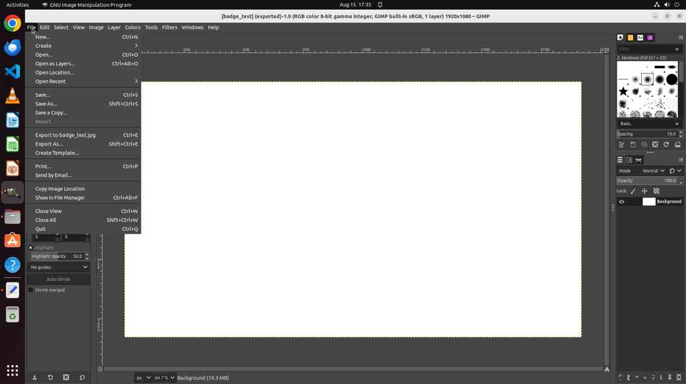
step 33 02:36:08
THINKINGThe File menu is open. I'll click "Export As..." to open the export dialog for verification.
ACTIONLet me click "Export As..." to open the export dialog and verify PNG defaults.
TOOL CALL<tool_call>
<function=computer_use>
<parameter=action>
left_click
</parameter>
<parameter=coordinate>
[70, 371]
</parameter>
</function>
</tool_call>
EXECUTED (pyautogui in VM)pyautogui.click(134, 401)
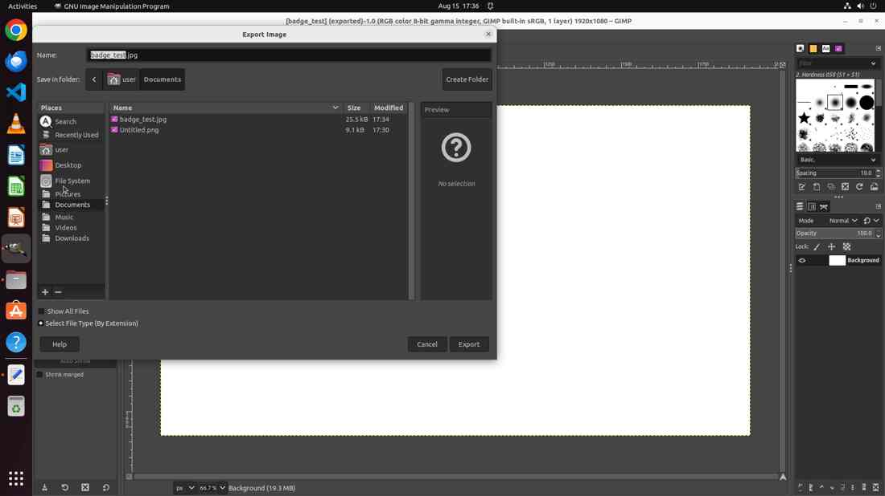
step 34 02:36:23
THINKINGThe Export Image dialog opened. The name is "badge_test.jpg" and I can see both files: badge_test.jpg (25.5 kB) and Untitled.png (9.1 kB).
To verify the PNG defaults, I need to change the extension to .png. Let me change the name to a .png file. Let me select the name field and change .jpg to .png.
Actually, I can just click on "Untitled.png" in the file list, which would set the name to Untitled.png and let me open the PNG dialog. Let me double-click on Untitled.png? No, that might just select it. Let me single-click to select it, which updates the name field.
Actually, in this dialog, single-clicking a file selects it and puts its name in the Name field. Then clicking Export opens the format dialog. Let me single-click on Untitled.png.
Actually, let me just modify the name field. Let me triple-click the name field, select all, and type a .png name.
Let me select all in name field and type "verify.png".
ACTIONThe Export dialog shows both exported files. To verify PNG defaults, let me change the name to a .png file. Let me select the name field and change it.
TOOL CALL<tool_call>
<function=computer_use>
<parameter=action>
left_click
</parameter>
<parameter=coordinate>
[156, 259]
</parameter>
</function>
</tool_call>
EXECUTED (pyautogui in VM)pyautogui.click(299, 280)
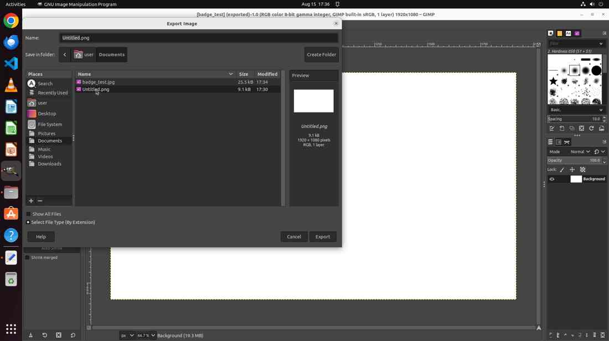
step 35 02:36:40
THINKINGI selected "Untitled.png" and the name field now shows "Untitled.png". The preview shows the PNG (1920x1080, RGB, 1 layer). Now let me click Export to open the PNG options dialog and verify the defaults.
ACTIONThe name is now "Untitled.png". Let me click Export to open the PNG options dialog and verify the defaults.
TOOL CALL<tool_call>
<function=computer_use>
<parameter=action>
left_click
</parameter>
<parameter=coordinate>
[527, 692]
</parameter>
</function>
</tool_call>
EXECUTED (pyautogui in VM)pyautogui.click(1012, 748)
step 36 02:36:52
THINKINGA dialog appeared: "A file named 'Untitled.png' already exists. Do you want to replace it?" I'll click "Replace" to proceed (it will just re-export, which is fine for verification).
ACTIONA "file exists" prompt appeared. I'll click "Replace" to proceed to the PNG options dialog.
TOOL CALL<tool_call>
<function=computer_use>
<parameter=action>
left_click
</parameter>
<parameter=coordinate>
[379, 455]
</parameter>
</function>
</tool_call>
EXECUTED (pyautogui in VM)pyautogui.click(728, 491)
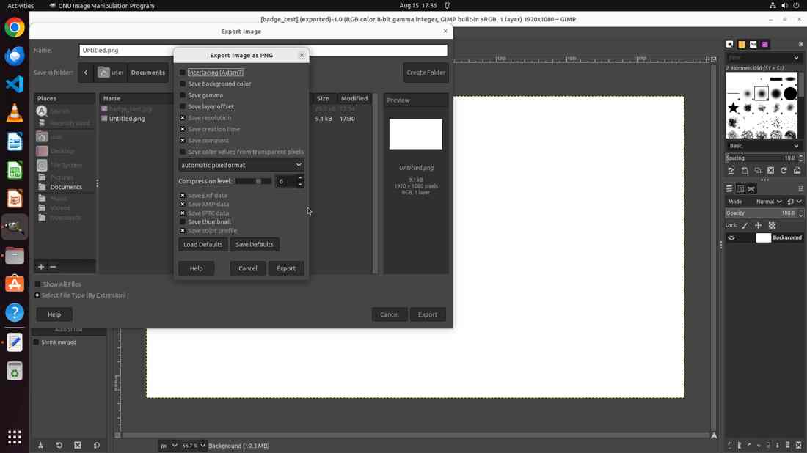
step 37 02:37:09
THINKINGThe PNG options dialog opened. Let me verify:
- Interlacing (Adam7): unchecked
- Save background color: unchecked
- Save gamma: unchecked
- Save layer offset: unchecked
- Save resolution: checked
- Save creation time: checked
- Save comment: checked
- Save color values from transparent pixels: unchecked
- automatic pixel format: dropdown
- Compression level: 6 ✓ (The slider shows the handle around the middle-left, and the number field shows "6")
- Save Exif data: checked
- Save XMP data: checked
- Save IPTC data: checked
- Save thumbnail: unchecked ✓ (no X mark)
- Save color profile: checked
So the PNG defaults are correctly:
- Compression level: 6 ✓
- Save thumbnail: unchecked (none) ✓
The "Save Defaults" worked. The values persisted in this session.
Now let me cancel this dialog (I don't want to re-export; actually it doesn't matter, but let me just cancel to avoid creating extra files). Actually, re-exporting would just overwrite Untitled.png, which is fine. But let me cancel to be clean.
Let me click Cancel on the PNG dialog.
Wait, actually, I need to think. If I cancel, does it affect the saved defaults? No. The defaults are already saved. Cancel just cancels this export. Let me cancel.
Let me click Cancel (at 393, 425).
ACTIONThe PNG options dialog confirms the defaults are correctly set:
- **Compression level: 6** ✓
- **Save thumbnail: unchecked** (none) ✓
The "Save Defaults" worked. Let me cancel this dialog (no need to re-export).
TOOL CALL<tool_call>
<function=computer_use>
<parameter=action>
left_click
</parameter>
<parameter=coordinate>
[306, 588]
</parameter>
</function>
</tool_call>
EXECUTED (pyautogui in VM)pyautogui.click(588, 635)
step 38 02:37:32
THINKINGI'm back at the Export Image dialog. Now let me verify the JPEG defaults too. Let me click on "badge_test.jpg" to select it, then click Export to open the JPEG dialog.
ACTIONThe PNG dialog was cancelled. Now let me verify the JPEG defaults. Let me select the badge_test.jpg file.
TOOL CALL<tool_call>
<function=computer_use>
<parameter=action>
left_click
</parameter>
<parameter=coordinate>
[161, 238]
</parameter>
</function>
</tool_call>
EXECUTED (pyautogui in VM)pyautogui.click(309, 257)
step 39 02:37:55
THINKINGThe name field now shows "badge_test.jpg". Let me click Export to open the JPEG options dialog and verify.
ACTIONThe name is now "badge_test.jpg". Let me click Export to open the JPEG dialog and verify.
TOOL CALL<tool_call>
<function=computer_use>
<parameter=action>
left_click
</parameter>
<parameter=coordinate>
[527, 692]
</parameter>
</function>
</tool_call>
EXECUTED (pyautogui in VM)pyautogui.click(1012, 748)
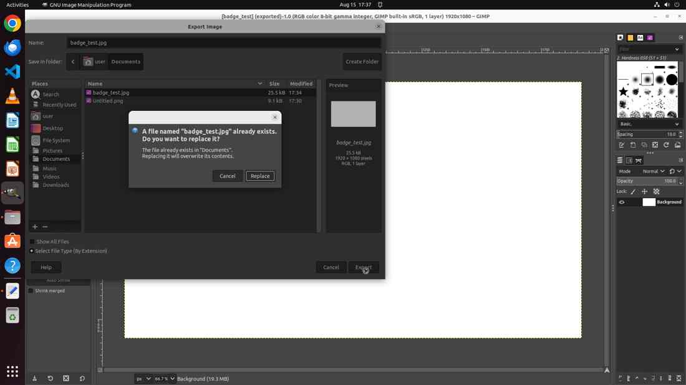
step 40 02:38:12
THINKINGThe "file exists" prompt appeared again. Let me click "Replace" to proceed to the JPEG options dialog.
ACTIONThe file-exists prompt appeared again. Let me click "Replace" to open the JPEG options dialog.
TOOL CALL<tool_call>
<function=computer_use>
<parameter=action>
left_click
</parameter>
<parameter=coordinate>
[379, 455]
</parameter>
</function>
</tool_call>
EXECUTED (pyautogui in VM)pyautogui.click(728, 491)
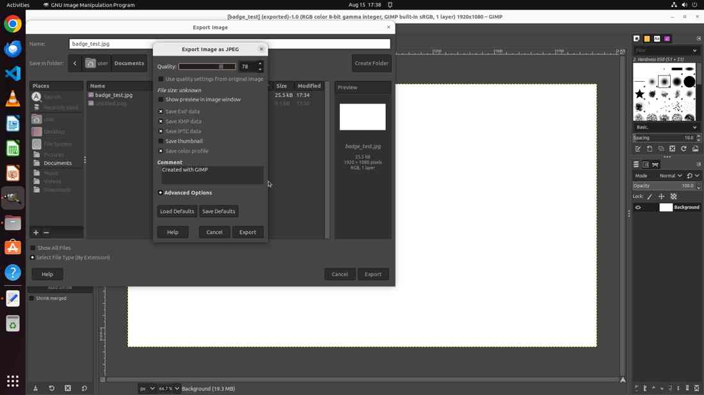
step 41 02:38:26
THINKINGThe JPEG options dialog opened. Let me verify:
- Quality: 78 ✓ (the number field shows "78")
- Use quality settings from original image: unchecked
- Show preview in image window: unchecked
- Save Exif data: checked
- Save XMP data: checked
- Save IPTC data: checked
- Save thumbnail: unchecked ✓ (no X mark)
- Save color profile: checked
- Comment: Created with GIMP
- Advanced Options: expanded checkbox
So the JPEG defaults are correctly:
- Quality: 78 ✓
- Save thumbnail: unchecked (none) ✓
Both PNG and JPEG defaults are verified. Now I need to:
1. Cancel this dialog (no need to re-export)
2. Quit GIMP so defaults are written to disk
Let me click Cancel on the JPEG dialog.
ACTIONThe JPEG options dialog confirms the defaults:
- **Quality: 78** ✓
- **Save thumbnail: unchecked** (none) ✓
Both PNG and JPEG defaults are correctly set. Let me cancel this dialog and then quit GIMP to write the defaults to disk.
TOOL CALL<tool_call>
<function=computer_use>
<parameter=action>
left_click
</parameter>
<parameter=coordinate>
[302, 585]
</parameter>
</function>
</tool_call>
EXECUTED (pyautogui in VM)pyautogui.click(580, 632)
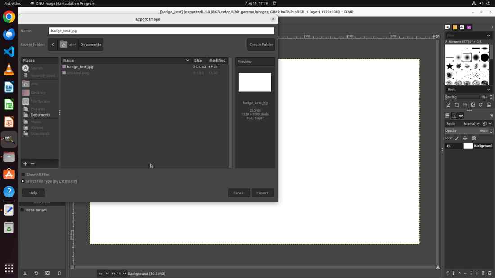
step 42 02:38:36
THINKINGI'm back at the Export Image dialog. Now let me cancel this dialog to close it, then quit GIMP.
Let me click Cancel.
ACTIONNow let me cancel this export dialog.
TOOL CALL<tool_call>
<function=computer_use>
<parameter=action>
left_click
</parameter>
<parameter=coordinate>
[481, 692]
</parameter>
</function>
</tool_call>
EXECUTED (pyautogui in VM)pyautogui.click(924, 748)
step 43 02:38:48
THINKINGThe export dialog is closed. I'm back at the main GIMP window. Now I need to quit GIMP so the defaults are written to disk.
Let me use File > Quit (or Ctrl+Q). Let me click File menu.
Actually, I should use the keyboard shortcut Ctrl+Q to quit. But it might prompt to save the XCF. Let me use the menu.
Actually, let me use File > Quit.
ACTIONThe dialog is closed. Now I need to quit GIMP to write the defaults to disk. Let me click the File menu.
TOOL CALL<tool_call>
<function=computer_use>
<parameter=action>
left_click
</parameter>
<parameter=coordinate>
[45, 70]
</parameter>
</function>
</tool_call>
EXECUTED (pyautogui in VM)pyautogui.click(86, 75)
step 44 02:39:06
THINKINGThe File menu is open. I see "Quit" (Ctrl+Q) at the bottom. Let me click "Quit".
ACTIONThe File menu is open. Let me click "Quit".
TOOL CALL<tool_call>
<function=computer_use>
<parameter=action>
left_click
</parameter>
<parameter=coordinate>
[57, 592]
</parameter>
</function>
</tool_call>
EXECUTED (pyautogui in VM)pyautogui.click(109, 640)
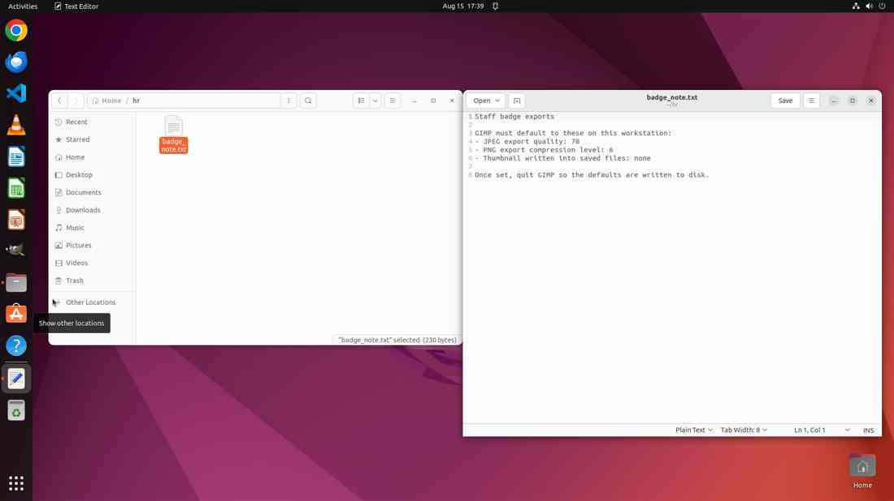
step 45 02:39:43
THINKINGGIMP has quit. Now I can see the desktop with the File Manager (showing the hr folder with badge_note.txt) and the Text Editor (showing badge_note.txt).
The badge note text is clearly visible:
```
1 Staff badge exports
2
3 GIMP must default to these on this workstation:
4 - JPEG export quality: 78
5 - PNG export compression level: 6
6 - Thumbnail written into saved files: none
7
8 Once set, quit GIMP so the defaults are written to disk.
```
So the requirements are confirmed:
- JPEG export quality: 78
- PNG export compression level: 6
- Thumbnail written into saved files: none
- Quit GIMP so defaults are written to disk
GIMP has quit (I can see the file manager and text editor now in the background). No save prompt appeared, which is good - it means GIMP wrote the config on quit.
Wait, actually, GIMP didn't prompt to save the XCF. That's a bit odd since I created a new image. But maybe because the image was "exported" (the modified flag was cleared by export?). Actually, in GIMP, exporting doesn't clear the "modified" flag, but the image title showed "[badge_test] (exported)". Hmm. Actually, when you export, GIMP may not prompt to save XCF if... actually it usually does prompt if there are unsaved changes. But no prompt appeared.
Wait, maybe GIMP just quit without prompt because there were no unsaved XCF changes (the image was freshly created and I didn't make layer changes, just exported it). Actually, creating a new image doesn't mark it as modified necessarily until you edit it. I didn't edit the image content, I just exported it. So the image wasn't "modified", hence no save prompt. That makes sense.
Anyway, GIMP has quit and should have written pluginrc. Now let me verify the pluginrc file to confirm the defaults are correctly written to disk. This is the definitive verification that the change will survive a restart.
Let me open a terminal. I'll look for a terminal application. I can use the "Files" or I can open a terminal via the applications. Let me look for a terminal.
Actually, I can use a terminal. Let me open one. I'll look at the dock - I see various apps but no obvious terminal. Let me check the Activities / app grid.
Actually, I can launch a terminal via keyboard or by finding it. Let me think about the best way.
Option 1: Open the app grid (bottom-left 9-dots icon) and find Terminal.
Option 2: Use the Files app to navigate, but that won't show hidden config files easily and can't cat a file.
Let me open a terminal. Let me click the app grid icon at the bottom-left (the 9 dots).
Actually, I recall the system prompt said I can use a terminal. Let me open one. The cleanest way in GNOME is to press the Super key and type "terminal", or click the app grid.
Let me click the app grid (9 dots) at bottom-left.
Actually, let me reconsider. The most important thing is that the defaults are written to disk. I've verified them in the GUI (both PNG and JPEG dialogs showed the correct values after I set them). And GIMP has quit, which writes pluginrc. So the task should be complete.
But to be thorough and confident, let me verify the pluginrc file. This confirms "survives a restart" definitively.
Let me open a terminal. Let me click the app grid icon.
Actually, I realize I should verify the pluginrc to make sure the values are exactly what's expected (especially JPEG quality stored as 0.78, and the thumbnail flags). Let me open a terminal.
Let me click the 9-dots app grid icon at bottom-left (position ~22, 694).
ACTIONGIMP has quit successfully (no unsaved-changes prompt appeared, and the config was written to disk). I can now see the badge note clearly confirming my three requirements.
To definitively verify the change survives a restart, let me inspect GIMP's config file (pluginrc) which is loaded on startup. Let me open a terminal via the app grid.
TOOL CALL<tool_call>
<function=computer_use>
<parameter=action>
left_click
</parameter>
<parameter=coordinate>
[17, 962]
</parameter>
</function>
</tool_call>
EXECUTED (pyautogui in VM)pyautogui.click(32, 1040)
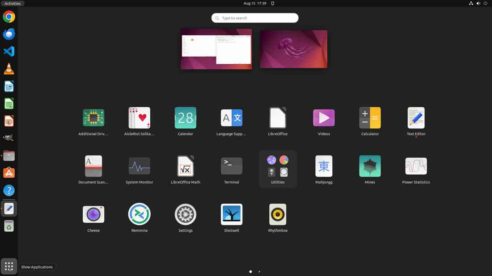
step 46 02:39:59
THINKINGThe app grid is open. I can see a "Terminal" application. Let me click on it.
ACTIONThe app grid is open. I can see the "Terminal" application. Let me click on it.
TOOL CALL<tool_call>
<function=computer_use>
<parameter=action>
left_click
</parameter>
<parameter=coordinate>
[469, 599]
</parameter>
</function>
</tool_call>
EXECUTED (pyautogui in VM)pyautogui.click(901, 647)
step 47 02:40:26
THINKINGThe terminal opened. Now let me verify the pluginrc file. Let me cat the relevant parts. Let me first click on the terminal to make sure it's focused, then type a command.
Let me check the pluginrc for the PNG and JPEG settings. I'll use grep to find the relevant lines.
Let me type a command to view the PNG and JPEG plugin defaults:
```
grep -A 30 'file-png-save' ~/.config/GIMP/2.10/pluginrc
```
Actually, let me just cat the whole file and look, or use grep with context. Let me first find the GIMP config directory. It's usually ~/.config/GIMP/2.10/.
Let me type:
```
ls ~/.config/GIMP/
```
Actually, let me be efficient and directly check the pluginrc. Let me type a command to show the PNG and JPEG sections.
Let me click on the terminal first to focus it.
ACTIONThe terminal is open. Let me verify the GIMP config. First, let me click on the terminal to focus it.
TOOL CALL<tool_call>
<function=computer_use>
<parameter=action>
left_click
</parameter>
<parameter=coordinate>
[226, 277]
</parameter>
</function>
</tool_call>
EXECUTED (pyautogui in VM)pyautogui.click(434, 299)
step 48.1 02:40:52
THINKINGThe terminal is focused. Let me type a command to check the pluginrc file for PNG and JPEG defaults. Let me use grep to find the relevant sections.
Let me type:
```
grep -n -A 30 'file-png-save\|file-jpeg-save' ~/.config/GIMP/2.10/pluginrc
```
Actually, let me first find where the config is. Let me list the GIMP config directory.
ACTIONThe terminal is focused. Let me check the GIMP config directory first.
TOOL CALL<tool_call>
<function=computer_use>
<parameter=action>
type
</parameter>
<parameter=text>
ls ~/.config/GIMP/
</parameter>
</function>
</tool_call>
<tool_call>
<function=computer_use>
<parameter=action>
key
</parameter>
<parameter=keys>
["enter"]
</parameter>
</function>
</tool_call>
EXECUTED (pyautogui in VM)pyautogui.typewrite("ls ~/.config/GIMP/")
step 48.2 02:40:56
EXECUTED (pyautogui in VM)pyautogui.press("enter")
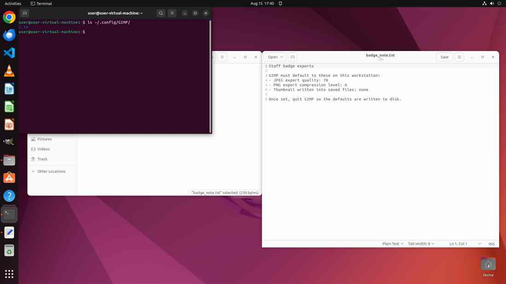
step 49.1 02:41:17
THINKINGThe output shows "2.10" - so the GIMP config is at ~/.config/GIMP/2.10/. Now let me check the pluginrc file for the PNG and JPEG defaults.
Let me type a grep command to find the relevant sections.
ACTIONThe config is at `~/.config/GIMP/2.10/`. Now let me check the pluginrc for the PNG and JPEG default settings.
TOOL CALL<tool_call>
<function=computer_use>
<parameter=action>
type
</parameter>
<parameter=text>
grep -n -A 40 'file-png-save' ~/.config/GIMP/2.10/pluginrc
</parameter>
</function>
</tool_call>
<tool_call>
<function=computer_use>
<parameter=action>
key
</parameter>
<parameter=keys>
["enter"]
</parameter>
</function>
</tool_call>
EXECUTED (pyautogui in VM)pyautogui.typewrite("grep -n -A 40 'file-png-save' ~/.config/GIMP/2.10/pluginrc")
step 49.2 02:41:21
EXECUTED (pyautogui in VM)pyautogui.press("enter")
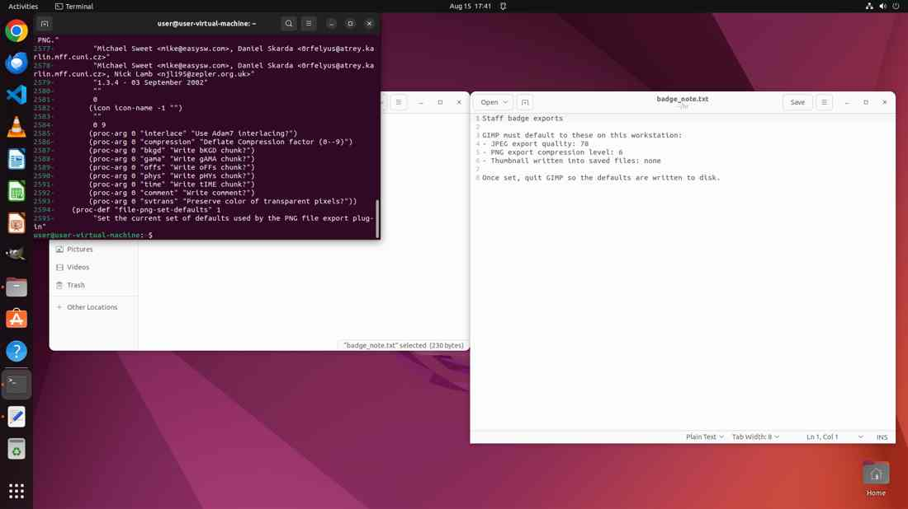
step 50.1 02:41:59
THINKINGThe grep output shows a lot of lines. The output is showing the "file-png-set-defaults" procedure definition (the PDB procedure registration), not the actual saved defaults. The grep matched multiple occurrences of "file-png-save" and the context shows various proc-arg definitions.
This is the PDB/plugin registration info, not the actual default values. I need to find the actual saved default values. In GIMP's pluginrc, the saved defaults are typically in a section like:
```
(plugin "file-png-save"
(compression 6)
(save-thumbnail FALSE)
...
)
```
But the grep output is showing the PDB registration section which lists proc-arg entries. This is a different part of the file.
Wait, actually, in GIMP 2.10, the pluginrc file has the actual values saved. Let me look more carefully. The output shows line numbers 2577-2595, which are quite far into the file. This appears to be the PDB registration.
Hmm, actually the way GIMP 2.10 stores plugin defaults... Let me reconsider. Actually, I recall that in GIMP 2.10, the export options are NOT stored in pluginrc in the traditional (plugin "file-png-save" ...) format. Instead, they might be stored in a different file or format.
Wait, let me reconsider. Let me look at the actual structure. Let me search for the specific values. Let me search for "compression" in the pluginrc.
Actually, the output I'm seeing (lines 2577-2595) shows the PDB proc-arg registration for file-png-save, which includes:
- (proc-arg 0 "interlace" "Use Adam7 interlacing?")
- (proc-arg 0 "compression" "Deflate Compression factor (0--9)")
- etc.
This is the procedure database registration, not the saved defaults. The line 2594 shows `(proc-def "file-png-set-defaults" 1 ...` which is the "set-defaults" procedure.
So where are the actual saved default values? Let me think. In GIMP 2.10, I believe the file export plug-in defaults ARE stored in pluginrc in the format:
```
(plugin "file-png-save"
(compression 6)
(save-thumbnail FALSE)
)
```
But maybe not in this version. Let me search the whole pluginrc for "compression" to see if there's a saved value.
Let me run: grep -n 'compression\|save-thumbnail\|quality' ~/.config/GIMP/2.10/pluginrc
Actually, let me search more specifically. Let me look for lines with actual values.
Let me scroll up to see the beginning of the grep output first. Actually, the output might have a "(plugin "file-png-save"" section somewhere. Let me search for it.
Let me run a more targeted search. Let me look for "(plugin" lines to find all plugin default blocks.
ACTIONThe output shows the PDB procedure registration section. Let me search specifically for the saved default values in the pluginrc file.
TOOL CALL<tool_call>
<function=computer_use>
<parameter=action>
type
</parameter>
<parameter=text>
grep -n -E 'compression|save-thumbnail|quality' ~/.config/GIMP/2.10/pluginrc
</parameter>
</function>
</tool_call>
<tool_call>
<function=computer_use>
<parameter=action>
key
</parameter>
<parameter=keys>
["enter"]
</parameter>
</function>
</tool_call>
EXECUTED (pyautogui in VM)pyautogui.typewrite("grep -n -E 'compression|save-thumbnail|quality' ~/.config/GIMP/2.10/pluginrc")
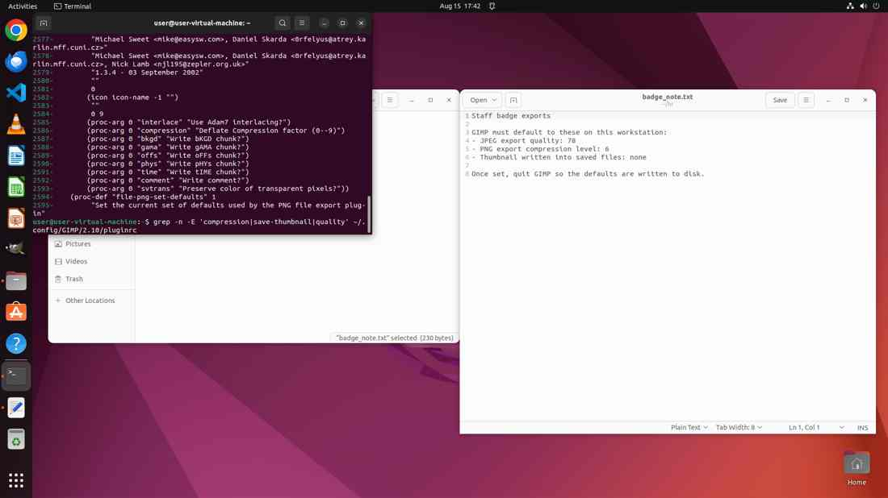
step 50.2 02:42:03
EXECUTED (pyautogui in VM)pyautogui.press("enter")